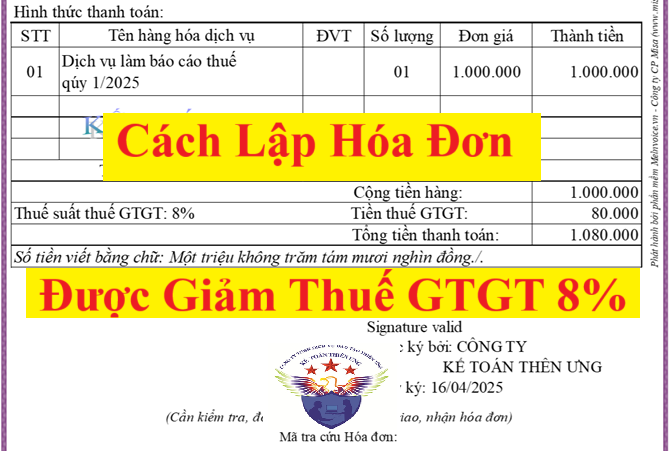
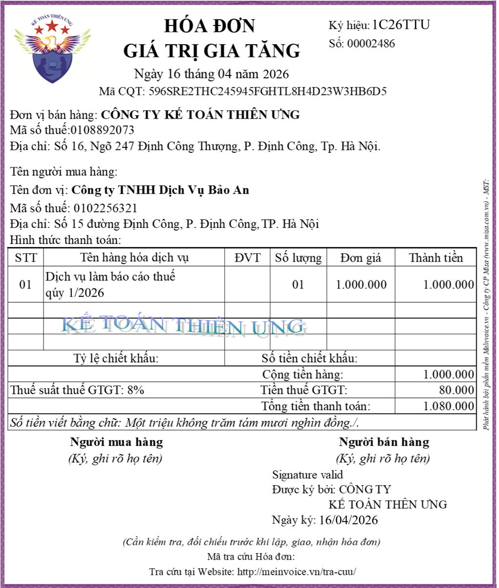
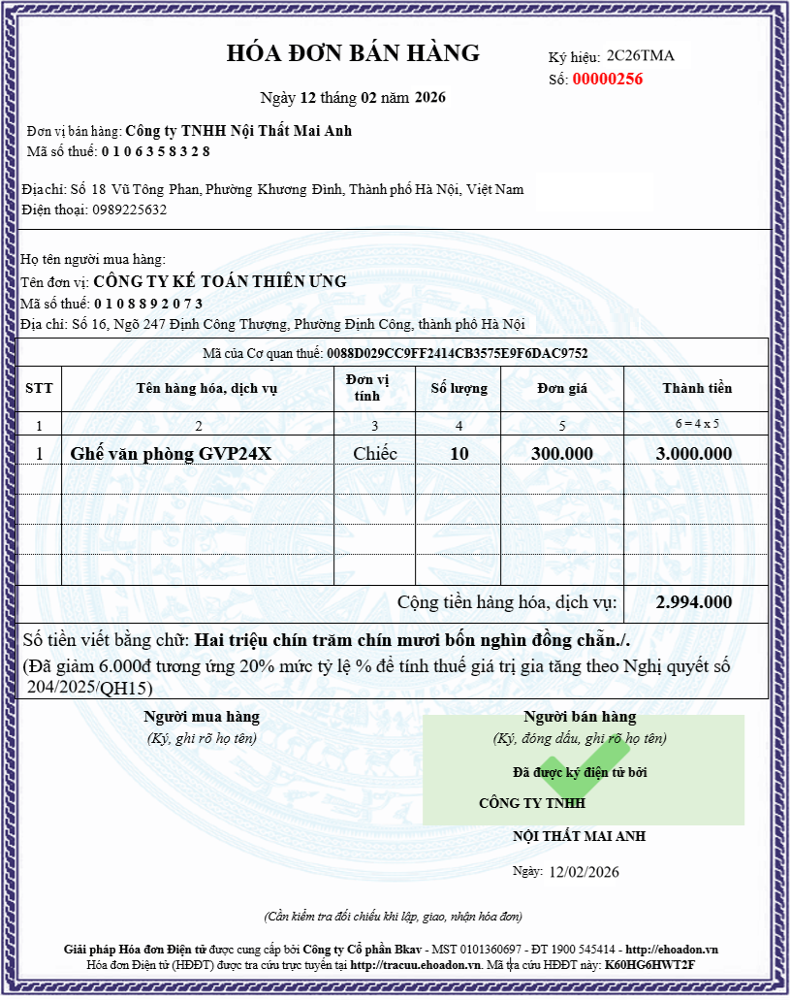

Hướng dẫn cách xuất hóa đơn được giảm thuế GTGT từ 10% xuống còn 8% năm 2026 theo quy định tại Nghị định 174/2025/NĐ-CP quy định chính sách giảm thuế giá trị gia tăng theo Nghị quyết 204/2025/QH15.
Để hàng hóa, dịch vụ đó được áp dụng chính sách giảm thuế tại Nghị Quyết 204/2025/QH15 thì hàng hóa dịch vụ đó phải đáp ứng được đồng thời cả 3 điều kiện sau:
+ Điều kiện số 1: hàng hóa, dịch vụ đó đang áp dụng mức thuế suất 10%
+ Điều kiện số 1: hàng hóa, dịch vụ đó đang áp dụng mức thuế suất 10%
Vì theo khoản 1, điều 1 của Nghị định 180/2024/NĐ-CP thì:
"1. Giảm thuế giá trị gia tăng đối với các nhóm hàng hóa, dịch vụ đang áp dụng mức thuế suất 10%"

Vậy là: Những hàng hóa dịch vụ thuộc đối tượng:
+ Không chịu thuế GTGT
+ Không phải kê khai tính nộp thuế GTGT
+ Chịu thuế giá trị gia tăng 0%
+ Chịu thuế giá trị gia tăng 5%
thì không được giảm thuế giá trị gia tăng (vẫn tiếp tục áp dụng mức thuế suất theo quy định của Luật Thuế giá trị gia tăng)
+ Điều kiện số 2: nhóm hàng hóa, dịch vụ đó không thuộc 1 trong các phụ lục I, II, III của Nghị định 174/2025/NĐ-CP
Tức là không thuộc các nhóm hàng hóa, dịch vụ sau:
+ Viễn thông, hoạt động tài chính, ngân hàng, chứng khoán, bảo hiểm, kinh doanh bất động sản, kim loại và sản phẩm từ kim loại đúc sẵn, sản phẩm khai khoáng (không kể khai thác than), than cốc, dầu mỏ tinh chế, sản phẩm hoá chất. Chi tiết tại Phụ lục I ban hành kèm theo Nghị định 174/2025/NĐ-CP.
+ Sản phẩm hàng hóa và dịch vụ chịu thuế tiêu thụ đặc biệt. Chi tiết tại Phụ lục II ban hành kèm theo Nghị định 174/2025/NĐ-CP.
+ Công nghệ thông tin theo pháp luật về công nghệ thông tin. Chi tiết tại Phụ lục III ban hành kèm theo Nghị định 174/2025/NĐ-CP.
+ Điều kiện số 3: Doanh nghiệp bán hàng hóa, cung cấp dịch vụ trong khoảng thời gian từ ngày 01/07/2025 đến hết ngày 31/12/2026
Vì Nghị định 174/2025/NĐ-CP có hiệu lực kể từ ngày 01 tháng 07 năm 2025 đến hết ngày 31 tháng 12 năm 2026
Nên:
Nên:
+/ Doanh nghiệp bán hàng hóa, cung cấp dịch vụ trong khoảng thời gian từ ngày 01/07/2025 đến hết ngày 31/12/2026 thì được xác định mức giảm thuế theo quy định tại Nghị định 174/2025/NĐ-CP
+/ Doanh nghiệp bán hàng hóa, cung cấp dịch vụ sau khoảng thời gian này thì không được áp dụng chính sách giảm thuế GTGT tại Nghị định 174/2025/NĐ-CP (Tức là từ ngày 01/01/2027 trở đi sẽ không còn được áp dụng giảm thuế GTGT theo NĐ 174/2025/NĐ-CP nữa)
+ Còn trước ngày 01/07/2025 thì các bạn có thể tham khảo chính sách giảm thuế GTGT theo Nghị định 180/2024/NĐ-CP
+ Còn trước ngày 01/07/2025 thì các bạn có thể tham khảo chính sách giảm thuế GTGT theo Nghị định 180/2024/NĐ-CP
Dưới đây, Công ty Đào Tạo Kế Toán Diệu Tâm sẽ hướng dẫn các bạn cách xuất hóa đơn được giảm thuế GTGT theo quy định tại Nghị định 174/2025/NĐ-CP:
Khi lập hoá đơn giá trị gia tăng cung cấp hàng hóa, dịch vụ thuộc đối tượng giảm thuế giá trị gia tăng thì:
Ví dụ: Công Ty Tư Vấn Minh Phúc là công ty tính thuế giá trị gia tăng theo phương pháp khấu trừ => Sử dụng loại hóa đơn là hóa đơn GTGT
+ Bước 1: Xác định điều kiện số 1 (mức thuế suất đang áp dụng của hàng hóa, dịch vụ cung cấp là bao nhiêu):
+ Bước 2: Xác định xem hàng hóa, dịch vụ cung cấp đó có thuộc 1 trong các phụ lục I, II, III của Nghị định 174/2025/NĐ-CP hay không
+ Bước 3: Xác định thời điểm bán hàng hóa, cung cấp dịch vụ
=> Thời điểm lập hóa đơn của việc cung cấp dịch vụ làm báo cáo thuế đang phát sinh trong khoảng thời gian được giảm thuế là từ ngày 01/07/2025 đến hết ngày 31/12/2026 (Ngày 16/4/2026 thuộc vào trong thời gian áp dụng giảm thuế của nghị định 174/2025/NĐ-CP là từ ngày 01 tháng 07 năm 2025 đến hết ngày 31 tháng 12 năm 2026)
1. Cách xuất hóa đơn GTGT được giảm thuế GTGT từ 10% xuống còn 8% đối với những doanh nghiệp kê khai tính thuế GTGT theo phương pháp khấu trừ:
Thực hiện theo điểm a, khoản 3, điều 1 của Nghị định 174/2025/NĐ-CP như sau:
Khi lập hoá đơn giá trị gia tăng cung cấp hàng hóa, dịch vụ thuộc đối tượng giảm thuế giá trị gia tăng thì:
+/ Tại dòng “Thuế suất thuế giá trị gia tăng” ghi là “8%”
+/ Tại dòng “Tiền thuế giá trị gia tăng” được xác định bằng “Tổng tiền chưa có thuế GTGT” x 8%
+/ Tại dòng “Tổng số tiền người mua phải thanh toán” được xác định bằng “Tổng tiền chưa có thuế GTGT” cộng với số “Tiền thuế giá trị gia tăng” đã nhân với thuế suất 8%
+/ Tại dòng “Tiền thuế giá trị gia tăng” được xác định bằng “Tổng tiền chưa có thuế GTGT” x 8%
+/ Tại dòng “Tổng số tiền người mua phải thanh toán” được xác định bằng “Tổng tiền chưa có thuế GTGT” cộng với số “Tiền thuế giá trị gia tăng” đã nhân với thuế suất 8%
Ví dụ: Công Ty Tư Vấn Minh Phúc là công ty tính thuế giá trị gia tăng theo phương pháp khấu trừ => Sử dụng loại hóa đơn là hóa đơn GTGT
Ngày 16/4/2026, có phát sinh việc cung cấp dịch vụ làm báo cáo thuế qúy 1/2026 cho công ty Bảo An như sau:
+ Sản phẩm dịch vụ: Dịch vụ làm báo cáo thuế qúy 1/2026
+ Giá dịch vụ: 2.000.000đ (chưa bao gồm thuế GTGT)
=> Ngày 16/4/2026 là công ty Diệu Tâm hoàn thành dịch vụ và cũng là ngày thu tiền dịch vụ của công ty Bảo An
=> Xác định mức thuế suất khi xuất hóa đơn:+ Sản phẩm dịch vụ: Dịch vụ làm báo cáo thuế qúy 1/2026
+ Giá dịch vụ: 2.000.000đ (chưa bao gồm thuế GTGT)
=> Ngày 16/4/2026 là công ty Diệu Tâm hoàn thành dịch vụ và cũng là ngày thu tiền dịch vụ của công ty Bảo An
+ Bước 1: Xác định điều kiện số 1 (mức thuế suất đang áp dụng của hàng hóa, dịch vụ cung cấp là bao nhiêu):
Theo quy định tại Luật thuế GTGT số 48/2024/QH15 thì Dịch vụ làm báo cáo thuế thuộc đối tượng chịu thuế suất thuế GTGT là 10%
(Việc giảm thuế GTGT từ 10% xuống còn 8% chỉ áp dụng cho các nhóm hàng hóa, dịch vụ đang áp dụng mức thuế suất 10% thôi)
=> Đã đáp ứng được điều kiện số 1
(Việc giảm thuế GTGT từ 10% xuống còn 8% chỉ áp dụng cho các nhóm hàng hóa, dịch vụ đang áp dụng mức thuế suất 10% thôi)
=> Đã đáp ứng được điều kiện số 1
=> Khi đã xác định được hàng hóa, dịch vụ cung cấp đó thuộc đối tượng chịu thuế suất 10% rồi thì mới tiếp tục xác định sang bước 2.
Còn nếu hàng hóa, dịch vụ cung cấp đó thuộc đối tượng không chịu thuế GTGT, hoặc không phải kê khai tính nộp thuế GTGT hoặc chịu thuế suất 0%, hoặc chịu thuế suất 5% thì hàng hóa, dịch vụ cung cấp đó không được giảm thuế GTGT theo Nghị định 174/2025/NĐ-CP.
Những hàng hóa dịch vụ xuất hiện tại phụ lục I, hoặc phụ lục II, hoặc phụ lục III của Nghị định 174/2025/NĐ-CP là những hàng hóa, dịch vụ không được áp dụng giảm thuế GTGT
Các bạn sẽ tiến hành tra cứu hàng hóa, dịch vụ cung cấp đó tại các phụ lục I, II, III của Nghị định 174/2025/NĐ-CP rồi xác định:
+ Nếu hàng hóa, dịch vụ cung cấp đó có xuất hiện tại 1 trong các phụ lục I, II, III của Nghị định 174/2025/NĐ-CP thì hàng hóa, dịch vụ cung cấp đó không thuộc đối tượng được giảm thuế GTGT theo Nghị định 174/2025/NĐ-CP
+ Nếu hàng hóa, dịch vụ cung cấp đó không xuất hiện tại 1 trong các phụ lục I, II, III của Nghị định 174/2025/NĐ-CP thì hàng hóa, dịch vụ cung cấp đó thuộc đối tượng được giảm thuế GTGT theo Nghị định 174/2025/NĐ-CP
+ Nếu hàng hóa, dịch vụ cung cấp đó không xuất hiện tại 1 trong các phụ lục I, II, III của Nghị định 174/2025/NĐ-CP thì hàng hóa, dịch vụ cung cấp đó thuộc đối tượng được giảm thuế GTGT theo Nghị định 174/2025/NĐ-CP
=> Cách tra cứu: Các bạn mở Nghị định 174/2025/NĐ-CP rồi tìm kiếm (ctrl+F) bằng tên hoặc bằng mã của hàng hóa dịch vụ đó xem có kết quả hay không
Vì "Dịch vụ làm báo cáo thuế" không xuất hiện tại 1 trong các phụ lục I, II, III của Nghị định 174/2025/NĐ-CP nên "Dịch vụ làm báo cáo thuế" thuộc đối tượng được giảm thuế GTGT theo Nghị định 174/2025/NĐ-CP => Đã đáp ứng được điều kiện số 2+ Bước 3: Xác định thời điểm bán hàng hóa, cung cấp dịch vụ
Vì ngày 16/4/2026 là công ty Diệu Tâm hoàn thành dịch vụ và cũng là ngày thu tiền dịch vụ của công ty Bảo An => Đây cũng chính là thời điểm (là ngày) mà công ty Diệu Tâm phải xuất hóa đơn cho dịch vụ làm báo cáo thuế cho công ty Bảo An này
=> Thời điểm lập hóa đơn của việc cung cấp dịch vụ làm báo cáo thuế đang phát sinh trong khoảng thời gian được giảm thuế là từ ngày 01/07/2025 đến hết ngày 31/12/2026 (Ngày 16/4/2026 thuộc vào trong thời gian áp dụng giảm thuế của nghị định 174/2025/NĐ-CP là từ ngày 01 tháng 07 năm 2025 đến hết ngày 31 tháng 12 năm 2026)
=> Nên dịch vụ làm báo cáo thuế này đối tượng được giảm thuế GTGT theo Nghị định 174/2025/NĐ-CP => Đã đáp ứng được điều kiện số 3
Vậy là: Dịch vụ làm báo cáo thuế qúy 1/2026 đang đáp ứng được đồng thời cả 3 điều kiện về giảm thuế GTGT của Nghị định 174/2025/NĐ-CP- Nên khi lập hóa đơn giá trị gia tăng: Công ty Kế Toán Diệu Tâm sẽ ghi như sau:
+/ Tại dòng “Thuế suất thuế giá trị gia tăng” ghi là “8%”
+/ Tại dòng “Tiền thuế giá trị gia tăng” được xác định bằng “Tổng tiền chưa có thuế GTGT” x 8%
+/ Tại dòng “Tổng số tiền người mua phải thanh toán” được xác định bằng “Tổng tiền chưa có thuế GTGT” cộng với số “Tiền thuế giá trị gia tăng” đã nhân với thuế suất 8%
Cụ thể hóa đơn GTGT giảm thuế được lập như sau:+/ Tại dòng “Tiền thuế giá trị gia tăng” được xác định bằng “Tổng tiền chưa có thuế GTGT” x 8%
+/ Tại dòng “Tổng số tiền người mua phải thanh toán” được xác định bằng “Tổng tiền chưa có thuế GTGT” cộng với số “Tiền thuế giá trị gia tăng” đã nhân với thuế suất 8%

2. Cách xuất hóa đơn bán hàng được giảm thuế GTGT đối với những doanh nghiệp kê khai tính thuế GTGT theo phương pháp trực tiếp:
Thực hiện theo điểm b, khoản 3, điều 1 của Nghị định 174/2025/NĐ-CP như sau:Khi lập hóa đơn bán hàng cung cấp hàng hóa, dịch vụ thuộc đối tượng giảm thuế giá trị gia tăng thì:
+ Tại cột “Thành tiền” ghi đầy đủ tiền hàng hóa, dịch vụ trước khi giảm
+ Tại dòng “Cộng tiền hàng hóa, dịch vụ” ghi theo số đã giảm 20% mức tỷ lệ % trên doanh thu
+ Đồng thời ghi chú thêm: “đã giảm... (số tiền) tương ứng 20% mức tỷ lệ % để tính thuế giá trị gia tăng theo Nghị quyết số 204/2025/QH15”.
Ví dụ: Công ty TNHH Nội Thất Mai Anh là công ty tính thuế giá trị gia tăng theo phương pháp tỷ lệ % trên doanh thu (Phương pháp trực tiếp) => Sử dụng loại hóa đơn là hóa đơn bán hàng
+ Tại dòng “Cộng tiền hàng hóa, dịch vụ” ghi theo số đã giảm 20% mức tỷ lệ % trên doanh thu
+ Đồng thời ghi chú thêm: “đã giảm... (số tiền) tương ứng 20% mức tỷ lệ % để tính thuế giá trị gia tăng theo Nghị quyết số 204/2025/QH15”.
Ngày 12/02/2026, có phát sinh việc bán ghế văn phòng cho Công Ty Tư Vấn Minh Phúc như sau:
+ Tên hàng hóa: Ghế văn phòng GVP24X
+ Số lượng: 10 chiếc
+ Giá bán: 300.000/Chiếc
+ Đã bàn giao hàng hóa vào ngày 12/02/2026
+ Số lượng: 10 chiếc
+ Giá bán: 300.000/Chiếc
+ Đã bàn giao hàng hóa vào ngày 12/02/2026
=> Do bàn giao hàng hóa vào ngày 12/02/2026 nên thời điểm lập hóa đơn bán hàng là ngày 12/02/2026
* Xét các điều kiện để được giảm thuế GTGT theo nghị định 174/2025/NĐ-CP:
+ Điều kiện số 1: hàng hóa, dịch vụ đó đang áp dụng mức thuế suất 10%
Theo quy định tại Luật thuế GTGT số 48/2024/QH15 thì hàng hóa là "Ghế văn phòng" thuộc đối tượng chịu thuế suất thuế GTGT là 10%
=> Đáp ứng được điều kiện số 1
=> Đáp ứng được điều kiện số 1
+ Điều kiện số 2: nhóm hàng hóa, dịch vụ đó không thuộc 1 trong các phụ lục I, II, III của Nghị định 174/2025/NĐ-CP
Vì hàng hóa là "Ghế văn phòng" không xuất hiện tại 1 trong các phụ lục I, II, III của Nghị định 174/2025/NĐ-CP nên hàng hóa là "Ghế văn phòng" thuộc đối tượng được giảm thuế GTGT theo Nghị định 174/2025/NĐ-CP => Đáp ứng được điều kiện số 2
+ Điều kiện số 3: Doanh nghiệp bán hàng hóa, cung cấp dịch vụ trong khoảng thời gian từ ngày 01/07/2025 đến hết ngày 31/12/2026
Vậy là: hàng hóa là Ghế văn phòng GVP24X đang đáp ứng được đồng thời cả 3 điều kiện về giảm thuế GTGT của Nghị định 174/2025/NĐ-CP
Vì thời điểm lập hóa đơn của việc bán "Ghế văn phòng đang phát sinh vào ngày 12/02/2026 => Thuộc vào trong thời gian áp dụng giảm thuế của nghị định 174/2025/NĐ-CP là từ ngày 01 tháng 07 năm 2025 đến hết ngày 31 tháng 12 năm 2026) => Đáp ứng được điều kiện số 3
Vậy là: hàng hóa là Ghế văn phòng GVP24X đang đáp ứng được đồng thời cả 3 điều kiện về giảm thuế GTGT của Nghị định 174/2025/NĐ-CP
- Nên khi lập hóa đơn bán hàng: Công ty TNHH Nội Thất Mai Anh sẽ ghi như sau:
+ Tại cột “Thành tiền” ghi đầy đủ tiền hàng hóa trước khi giảm
+ Tại dòng “Cộng tiền hàng hóa, dịch vụ” ghi theo số đã giảm 20% mức tỷ lệ % trên doanh thu, đồng thời ghi chú: “đã giảm 6.000đ tương ứng 20% mức tỷ lệ % để tính thuế giá trị gia tăng theo Nghị quyết số 204/2025/QH15”.
+ Tại dòng “Cộng tiền hàng hóa, dịch vụ” ghi theo số đã giảm 20% mức tỷ lệ % trên doanh thu, đồng thời ghi chú: “đã giảm 6.000đ tương ứng 20% mức tỷ lệ % để tính thuế giá trị gia tăng theo Nghị quyết số 204/2025/QH15”.
Cách xác định mức giảm (“Số tiền” giảm) để ghi vào phần "Ghi chú" trên hóa đơn bán hàng như sau:
Theo quy định tại khoản 2 điều 12 của Luật thuế GTGT số 48/2024/QH15 thì:Đối với các công ty tính thuế giá trị gia tăng theo phương pháp tỷ lệ % trên doanh thu (Phương pháp trực tiếp) thì:
Số thuế GTGT phải nộp theo phương pháp tính trực tiếp trên GTGT = tỷ lệ % nhân với doanh thu tính thuế
Trong đó:
- Tỷ lệ % để tính thuế GTGT trên doanh thu được quy định theo từng hoạt động như sau:
+ Phân phối, cung cấp hàng hóa: 1%;
+ Dịch vụ, xây dựng không bao thầu nguyên vật liệu: 5%;
+ Sản xuất, vận tải, dịch vụ có gắn với hàng hóa, xây dựng có bao thầu nguyên vật liệu: 3%;
+ Hoạt động kinh doanh khác: 2%;
(Chi tiết về Bảng danh mục ngành nghề tính thuế GTGT theo tỷ lệ % trên doanh thu xem tại phụ lục I được ban hành kèm theo Thông tư 69/2025/TT-BTC)
- Doanh thu để tính thuế giá trị gia tăng là tổng số tiền bán hàng hóa, dịch vụ ghi trên hóa đơn bán hàng, bao gồm các khoản phụ thu và phí thu thêm mà cơ sở kinh doanh được hưởng.=> Do đó: khi bán hàng hóa là 10 chiếc ghế văn phòng GVP24X sẽ xác định được:
+ Doanh thu để tính thuế GTGT là: 10 x 300.000 = 3.000.000đ
+ Tỷ lệ % để tính thuế GTGT trên doanh thu là: 1%
(Vì theo Bảng danh mục ngành nghề tính thuế GTGT theo tỷ lệ % trên doanh thu được ban hành kèm theo Thông tư 69/2025/TT-BTC thì hàng hóa thuộc nhóm “1) Phân phối, cung cấp hàng hóa: 1%”)
+ Tỷ lệ % để tính thuế GTGT trên doanh thu là: 1%
(Vì theo Bảng danh mục ngành nghề tính thuế GTGT theo tỷ lệ % trên doanh thu được ban hành kèm theo Thông tư 69/2025/TT-BTC thì hàng hóa thuộc nhóm “1) Phân phối, cung cấp hàng hóa: 1%”)
* Số thuế GTGT phải nộp khi chưa thực hiện áp dụng giảm thuế GTGT theo Nghị định 174/2025/NĐ-CP:
| Số thuế GTGT phải nộp | = | Tỷ lệ % | x | Doanh thu tính thuế |
| = | 1% | x | 3.000.000đ | |
| = | 30.000đ | |||
* Số thuế GTGT được giảm khi áp dụng giảm thuế GTGT theo Nghị định 174/2025/NĐ-CP:
|
Số thuế GTGT được giảm |
= | Mức giảm | x | Tỷ lệ % | x | Doanh thu tính thuế |
| = | 20% | x | 1% | x | 3.000.000đ | |
| = | 6.000đ | |||||
| (Đây chính là số tiền để ghi vào phần ghi chú “Đã giảm …. tương ứng 20% mức tỷ lệ % để tính thuế giá trị gia tăng theo Nghị quyết số 204/2025/QH15” trên hóa đơn bán hàng) | ||||||
Cụ thể hóa đơn bán hàng giảm thuế được lập như sau:

3. Lưu ý khi lập hóa đơn được giảm thuế GTGT theo Nghị định 174/2025/NĐ-CP
+ Trường hợp cơ sở kinh doanh theo quy định tại điểm a khoản 2 Điều này khi bán hàng hóa, cung cấp dịch vụ áp dụng các mức thuế suất khác nhau thì trên hóa đơn giá trị gia tăng phải ghi rõ thuế suất của từng hàng hóa, dịch vụ theo quy định tại khoản 3 Điều này.
Trường hợp cơ sở kinh doanh theo quy định tại điểm b khoản 2 Điều này khi bán hàng hóa, cung cấp dịch vụ thì trên hóa đơn bán hàng phải ghi rõ số tiền được giảm theo quy định tại khoản 3 Điều này.
+ Trường hợp cơ sở kinh doanh đã lập hóa đơn và đã kê khai theo mức thuế suất hoặc mức tỷ lệ % để tính thuế giá trị gia tăng chưa được giảm theo quy định tại Nghị định này thì người bán và người mua xử lý hóa đơn đã lập theo quy định pháp luật về hóa đơn, chứng từ. Căn cứ vào hóa đơn sau khi xử lý, người bán kê khai điều chỉnh thuế đầu ra, người mua kê khai điều chỉnh thuế đầu vào (nếu có).
+ Cơ sở kinh doanh quy định tại Điều này thực hiện kê khai các hàng hóa, dịch vụ được giảm thuế giá trị gia tăng theo Mẫu số 01 tại Phụ lục III ban hành kèm theo Nghị định này cùng với Tờ khai thuế giá trị gia tăng.